長期トレンド
JKMとJEPXシステムプライスの推移グラフ
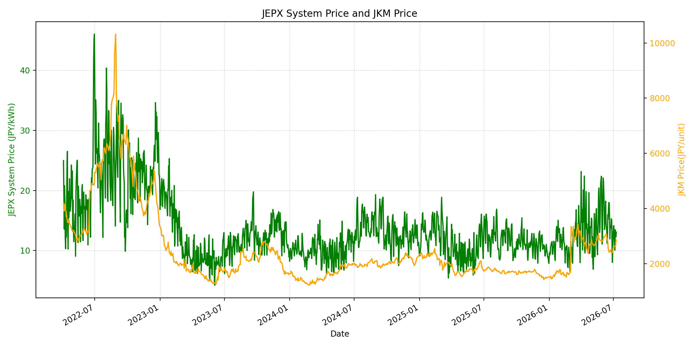
WTIの推移グラフ
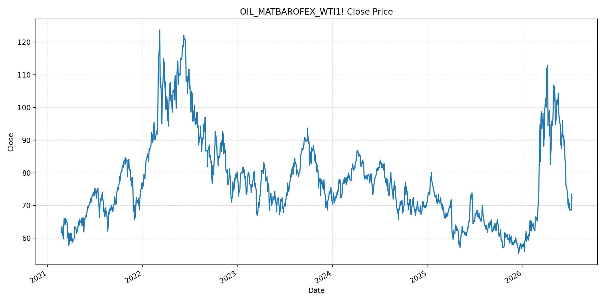
JEPXエリアプライスグラフ（直近一年分）
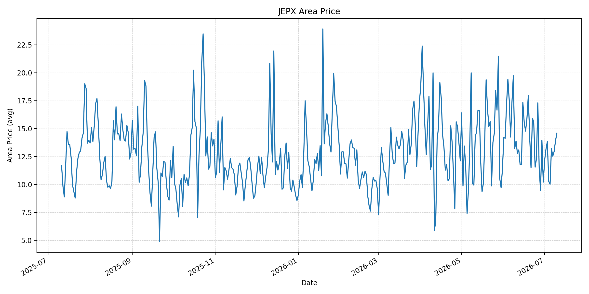
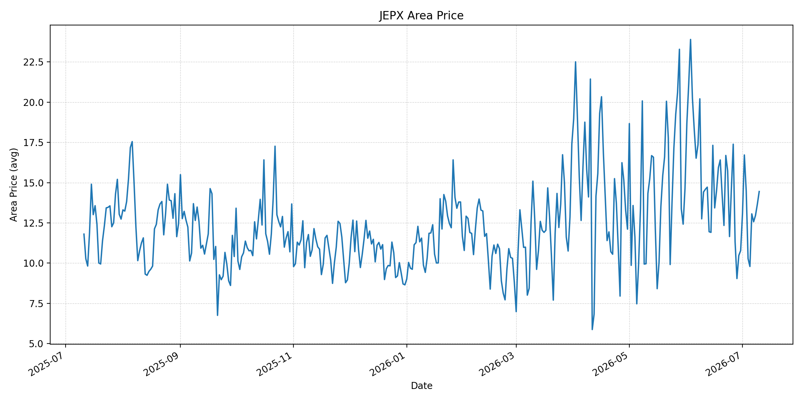
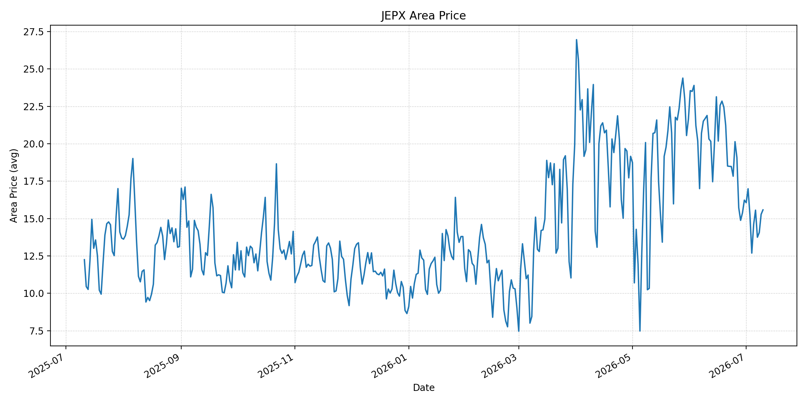
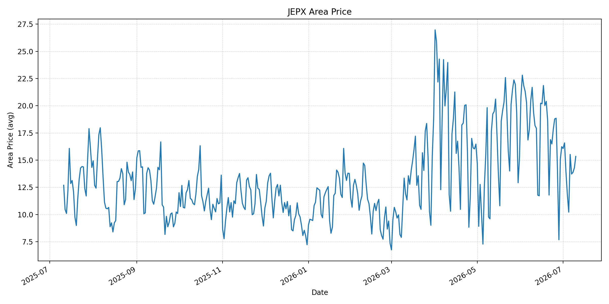
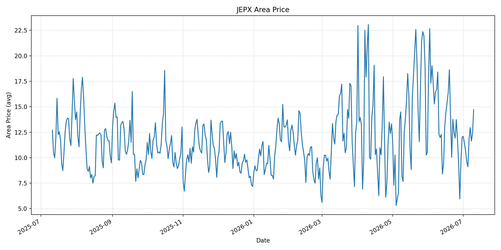
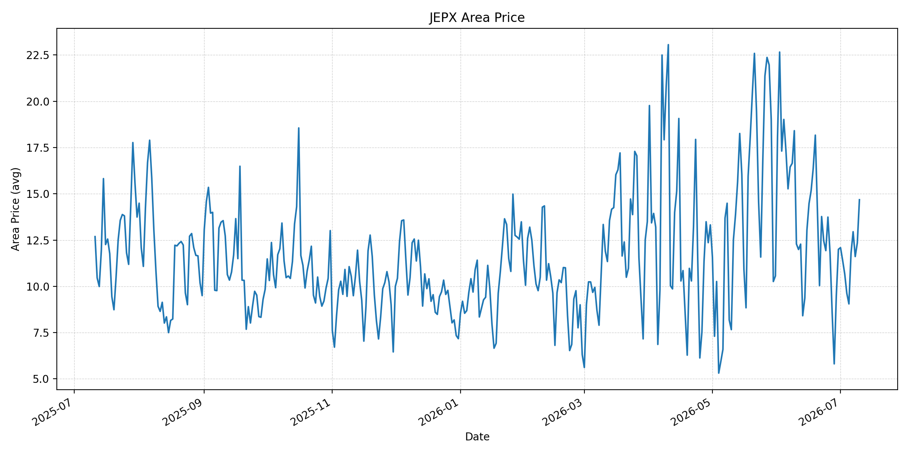
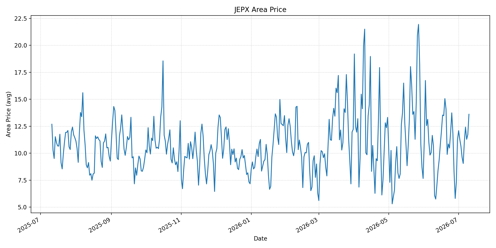
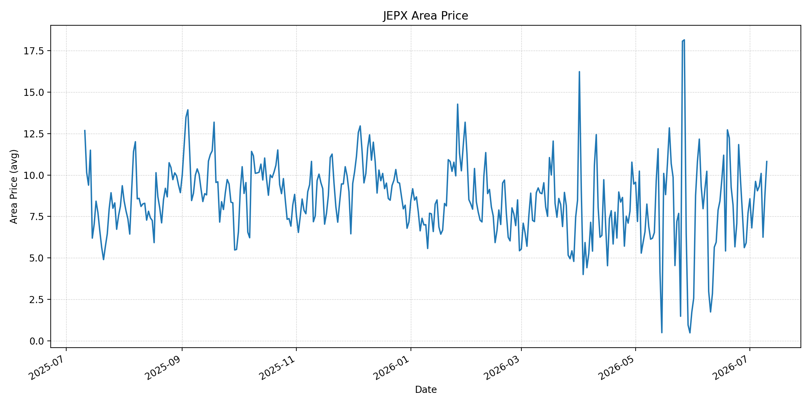
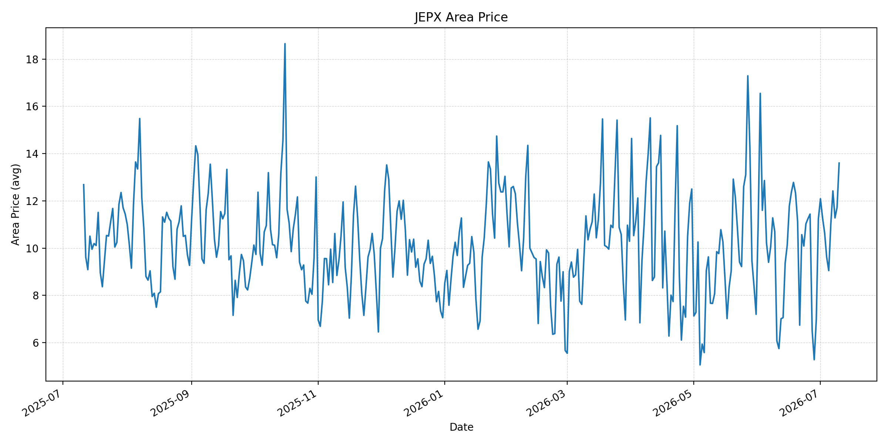
短期トレンド
JKMとJEPXシステムプライスの推移グラフ
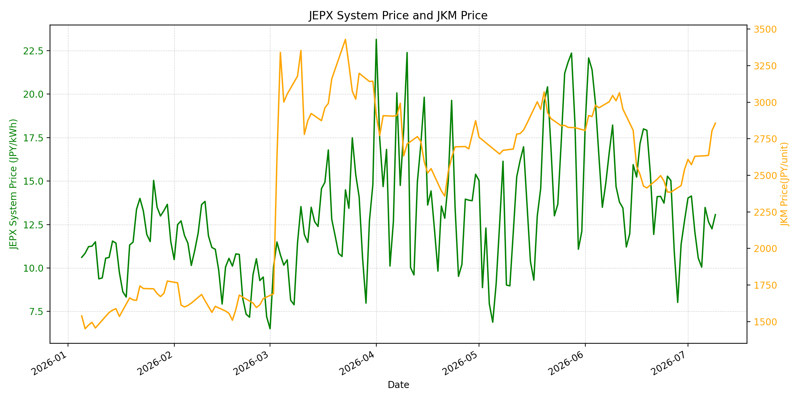
WTIの推移グラフ
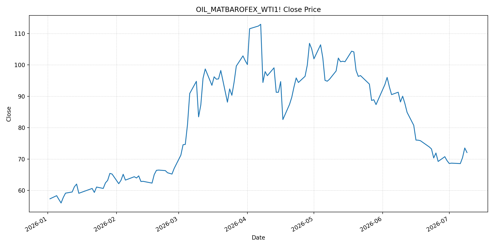
JEPXシステムプライス
JEPXは受渡日ベースの最新非空値で評価しています。最新値は 2026-07-10 分です。先週終値は 2026-07-03 時点の直近値、先月終値は 2026-06-30 時点の直近値で評価しています。
| エリア | 当日価格 | 前日価格 | 前日比（％） | 先週終値 | 先週比（％） | 先月終値 | 先月比（％） | 過去最高値 | 最高値比（％） |
|---|---|---|---|---|---|---|---|---|---|
| システム | 14.52 | 13.07 | 11.09 | 12.09 | 20.10 | 12.73 | 14.06 | 64.06 | -77.34 |
| 北海道 | 14.58 | 13.91 | 4.82 | 13.83 | 5.42 | 10.21 | 42.80 | 73.92 | -80.28 |
| 東北 | 14.45 | 13.66 | 5.78 | 14.49 | -0.28 | 10.78 | 34.04 | 84.92 | -82.98 |
| 東京 | 15.58 | 15.28 | 1.96 | 15.24 | 2.23 | 16.23 | -4.00 | 86.13 | -81.91 |
| 中部 | 15.34 | 14.29 | 7.35 | 13.94 | 10.04 | 16.23 | -5.48 | 52.06 | -70.54 |
| 北陸 | 14.71 | 12.38 | 18.82 | 10.68 | 37.73 | 12.01 | 22.48 | 46.48 | -68.36 |
| 関西 | 14.68 | 12.35 | 18.87 | 10.67 | 37.58 | 12.00 | 22.33 | 46.48 | -68.42 |
| 中国 | 13.61 | 11.72 | 16.13 | 10.66 | 27.67 | 11.26 | 20.87 | 46.48 | -70.72 |
| 四国 | 10.82 | 8.76 | 23.52 | 8.23 | 31.47 | 7.72 | 40.16 | 46.48 | -76.72 |
| 九州 | 13.60 | 11.72 | 16.04 | 10.66 | 27.58 | 11.24 | 21.00 | 40.54 | -66.46 |
LNG先物価格
最新値は 2026-07-09 の LNG(close) です。先週終値は 2026-07-02 時点の直近値、先月終値は 2026-06-30 時点の直近値で評価しています。
| 当日価格 | 前日価格 | 前日比（％） | 先週終値 | 先週比（％） | 先月終値 | 先月比（％） | 過去最高値 | 最高値比（％） |
|---|---|---|---|---|---|---|---|---|
| 2857.00 | 2805.00 | 1.85 | 2573.00 | 11.04 | 2541.00 | 12.44 | 10319.00 | -72.31 |
石油先物価格
最新値は 2026-07-09 の OIL(close) です。先週終値は 2026-07-02 時点の直近値、先月終値は 2026-06-30 時点の直近値で評価しています。
| 当日価格 | 前日価格 | 前日比（％） | 先週終値 | 先週比（％） | 先月終値 | 先月比（％） | 過去最高値 | 最高値比（％） |
|---|---|---|---|---|---|---|---|---|
| 72.08 | 73.52 | -1.96 | 68.69 | 4.94 | 69.50 | 3.71 | 123.70 | -41.73 |
ニュース
イラン情勢に関するニュース
- 2026年7月9日、APは、米軍がイラン国内90目標を攻撃し、イランがバーレーン、クウェート、カタール、ヨルダンなど米国寄りの中東諸国を標的にミサイル・ドローン攻撃を行ったと報じました。暫定停戦は大きく揺らいでいます。 参照: AP, 2026-07-09
- 同AP記事では、ハメネイ前最高指導者の葬儀がマシュハドで最終日を迎えた一方、トランプ大統領が商船攻撃を理由に停戦終了を示唆し、さらなる攻撃を警告したとされています。外交再開より軍事応酬が前面に出ています。 参照: AP, 2026-07-09
ホルムズ海峡経由の石油・LNGに関するニュース
- APは、米軍がホルムズ海峡の航行の自由への脅威を低下させる目的で攻撃したと説明した一方、同海峡では戦前に世界の取引油・天然ガスの約5分の1が通過していたと報じました。Lloyd's List Intelligenceによると、6月の通航は576隻で、前年6月の3,100隻超を大きく下回っています。 参照: AP, 2026-07-09
- MarketWatchは、米イランの交戦再燃で前日にWTIが76ドル近く、Brentが80ドル超まで上昇した後、7月10日にはWTIが73ドル弱、Brentが77ドル強へ反落したと報じました。市場はホルムズリスクを織り込みつつ、供給影響は短期にとどまるとの見方も出ています。 参照: MarketWatch, 2026-07-10
ホルムズ海峡経由でない石油・LNGに関するニュース
- Axiosは、UAEがホルムズ海峡を迂回するパイプライン能力を現在の150万バレル/日から2027年に300万バレル/日へ倍増させる計画を紹介し、将来のホルムズ依存が戦前の2,000万バレル/日から700万〜900万バレル/日へ低下し得ると報じました。 参照: Axios, 2026-07-09
- 同Axios記事は、ホルムズ危機が欧州・アジアで米国LNGなど分散調達の需要を強めている一方、石油市場には中国の購入減、米国輸出増、戦略備蓄放出、中東パイプライン活用といった緩衝材があると指摘しました。 参照: Axios, 2026-07-09
日本国内のイラン戦争に関係するニュース
- 過去24時間で、JEPX制度、国内電力需給ルール、または日本政府の対イラン戦争関連対策を直接変更する主要な新規公表は確認できませんでした。
- 関連する国内材料として、経済産業省は2026年5月20日、2026年度夏季は全エリアで安定供給に最低限必要な予備率3％を確保できるため節電要請を実施しないと発表しています。一方で、国際情勢の変化、異常気象、火力発電所の集中はリスクとして明記されています。 参照: 経済産業省, 2026-05-20
インサイト
ニュース事項による日本の電力市場への影響（短期：数日〜1週間）
- JEPXシステムプライスは 14.52 円/kWhで前日比 11.09%、先週比 20.10% と上昇しました。北陸 14.71 円/kWh、関西 14.68 円/kWhなど西日本側の上昇も目立ち、燃料高と夏季需給が同時に効き始めています。
- OILは 72.08 で前日比 -1.96% と反落しましたが、先週比は 4.94% です。MarketWatchが示すように短期の供給影響は限定的との見方もありますが、米イランの攻撃応酬が続く限り、リスクプレミアムは残ります。
- LNGは 2857.00 で前日比 1.85%、先週比 11.04% と上昇が続いています。ホルムズ通航が前年水準を大きく下回るなか、LNG調達心理は引き締まりやすく、数日〜1週間ではJEPXの下値を支える方向です。
ニュース事項による日本の電力市場への影響（長期：1ヶ月〜半年）
- ホルムズ迂回パイプライン拡張、米国LNG、非中東供給の増加が進めば、OILは過去最高値比 -41.73%、LNGは -72.31% と歴史的高値からはなお低位です。長期的には単一チョークポイント依存を下げる投資が燃料価格を抑制します。
- 一方、APが報じる米イランの攻撃応酬と通航量の低迷は、1ヶ月〜半年の物流・保険コストを押し上げるリスクです。戦前比で通航が大幅に少ない状態が続けば、燃料本体価格が落ち着いても調達プレミアムは残ります。
- 国内では節電要請なしの前提が維持されていますが、システム価格は先月比 14.06%、北海道は 42.80%、四国は 40.16% と高く、地域差が拡大しています。夏季需要と火力燃料の調達不安が重なる日は、広域価格の上振れに注意が必要です。